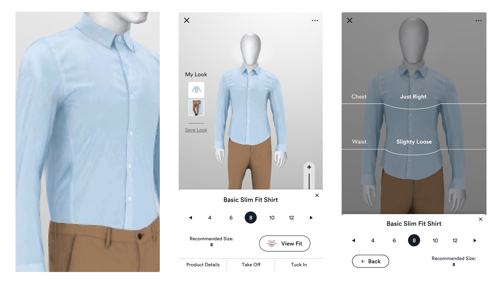
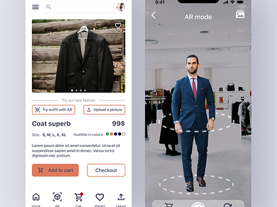

Visual Try-On
Visual Try-On is a cutting-edge application of computer vision technology in the world of e-commerce. It allows customers to virtually try on clothing, accessories, and even makeup before making a purchase. Here's how it works:
- Using a device's camera, the customer can see themselves on the screen in real-time.
- The computer vision system accurately detects the customer's body and facial features.
- Virtual items, such as clothing or makeup, are superimposed onto the customer's image in real-time.
- Customers can see how the items fit and look on them, helping them make more informed buying decisions.
Visual Try-On not only enhances the shopping experience but also reduces the likelihood of returns since customers can visualize the products on themselves accurately.
Augmented Reality (AR)
Augmented Reality is another fascinating application of computer vision in e-commerce. AR integrates digital content with the real world, providing customers with immersive experiences. Here are some key aspects of AR in e-commerce:
- AR allows customers to view products in their own environment through their smartphone or tablet cameras.
- For example, customers can place virtual furniture in their living room or try out different paint colors on their walls.
- This technology bridges the gap between online and offline shopping, making it more interactive and engaging.
- AR also enables interactive product demonstrations, helping customers understand complex products better.
AR is revolutionizing the way customers interact with products and is particularly popular in industries like furniture, home decor, and fashion.
Search by Image

Search by Image is a feature that simplifies the online shopping experience by using computer vision. Instead of typing in keywords or product names, customers can upload or take a photo of an item and search for similar products. Here's how it works:
- Customers take a picture of an item they like or have seen in the real world.
- The computer vision system analyzes the image, identifying key features and characteristics.
- Based on the analysis, the e-commerce platform presents products that closely match the image's content.
- Customers can find the exact item or discover similar products, making the shopping process more convenient and efficient.
Search by Image is a powerful tool for finding products that may be challenging to describe in words, and it's especially valuable for fashion and home decor.
FAQs (Frequently Asked Questions)
A: Yes, computer vision helps analyze customer interactions with visual content, enabling businesses to offer personalized recommendations, curated content, and tailored shopping experiences.
A: By leveraging augmented reality and computer vision, customers can virtually try on products using their devices' cameras, creating an immersive and engaging shopping experience.
A: Computer vision algorithms can analyze product images and videos to track inventory levels, detect out-of-stock items, and optimize supply chain processes, leading to improved efficiency.
A: Challenges include obtaining high-quality training data, managing computational requirements, and ensuring data privacy and security while leveraging computer vision technologies.
A: Computer vision enables visual search capabilities, allowing customers to search for products using images instead of textual queries, leading to more intuitive and accurate results.